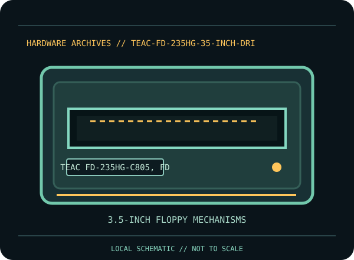

[ INDIVIDUAL COMPONENT // FLOPPY DRIVES ]
TEAC FD-235HG 3.5-inch Drive Family
This record identifies a documented physical floppy drive, controller, or preservation interface. It separates confirmed model facts from details that vary by suffix, board revision, host, media and configuration.

IDENTIFICATION NOTE: Match the full model/part number, revision, connector and manual before use. Similar family names do not establish interchangeable mechanics or host compatibility.
Model specifications
| Catalog subcategory | 3.5-inch floppy mechanisms |
|---|---|
| Exact model / family | TEAC FD-235HG-C805, FD-235HG-C817, FD-235HG-C897 |
| Era / product family | TEAC FD-235HG-C805 / C817 / C897 mechanism variants |
| Documented characteristics | Three specifically identified FD-235HG variants covered by TEAC’s model specification. The individual suffix matters: the document includes a separate USB-interface hardware specification for the U000 variant, which is not assumed for C805/C817/C897. |
| Interface / connectors | Connector, power and jumper details are variant-specific. Consult the C805/C817/C897 specification and the actual drive label; do not apply the separate U000 USB-interface document to these models. |
| Host and media compatibility | Host format and density depend on the exact variant and controller. The FD-235HG family name does not establish capacity, cable pinout, or whether a PC, embedded or USB host can operate a specific unit. |
Model-specific compatibility checks
- Identify the complete model/suffix, board revision, serial/date codes and connector arrangement from the physical unit; photograph all labels before installation.
- Host format and density depend on the exact variant and controller. The FD-235HG family name does not establish capacity, cable pinout, or whether a PC, embedded or USB host can operate a specific unit.
- Confirm the host controller, drive wiring, power, drive select, termination, media density and recording format against the cited model documentation. Do not infer a fit or capacity solely from the drive size or connector shape.
Preservation and service notes
Use the model specification before cleaning or replacing any parts, and retain the complete suffix and board revision in the collection record. Protect the shutter and head assembly from dust; stop acquisition if media drags or the drive reports unstable reads.
Keep original media and raw captures intact. Log the exact drive/controller/software configuration, acquisition date, condition and any service performed; checksum verified copies before creating derivatives.
Manufacturer documentation & sources
- TEAC — FD-235HG C805/C817/C897 SpecificationModel-specific TEAC specifications for the listed FD-235HG variants.
- TEAC — FD-235HG-U000 USB Interface Hardware SpecificationSeparate USB-variant reference; cited to clarify it must not be generalized to C805/C817/C897.
Sources are model-specific manufacturer documentation or archival copies of the original source. Where a document covers a family or multiple revisions, confirm its applicability to the exact unit before using an electrical or service specification.